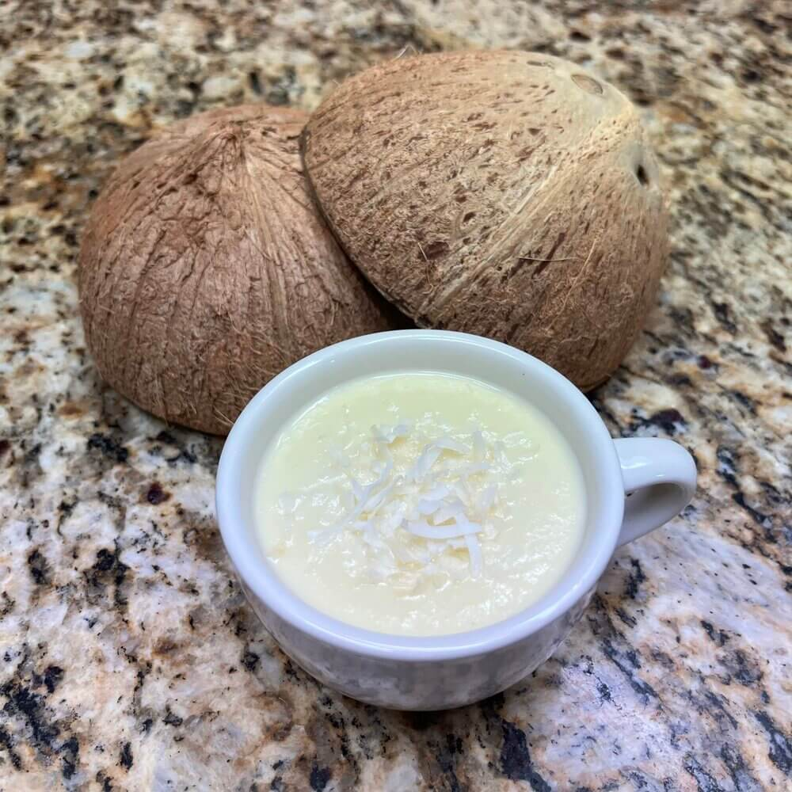

Recipes, craft projects, things that happen, and thoughts on life and the universe.
Coconut Cream Custard

Makes 2 Servings
Ingredients
- ½ cup coconut cream
- ½ cup cream
- 2 tbsp sugar
- 1 beaten egg
- ¼ tsp vanilla
- 1 tbsp super tiny bits of shredded coconut, unsweetened
- Mix all the ingredients together very thoroughly.
- Pour into a pan, turn heat to medium.
- Stir constantly while scraping the bottom to make sure none burns.
- When thickened and just barely beginning to bubble, remove from the pan and cool.
Flowers

As I was walking home from the bus stop one day, I happened to look down and notice some flowers growing in the grass beside the sidewalk. These flowers blooming in such an unexpected place were so wondrous and pure to me, nature’s beauty springing from the mundane.
The grass was eventually mowed and the flowers were lost, but whenever I remember this image, I am struck again by the knowledge that nature so often fights our attempts to tame and suppress it by the simple means of growing flowers where we planted none.